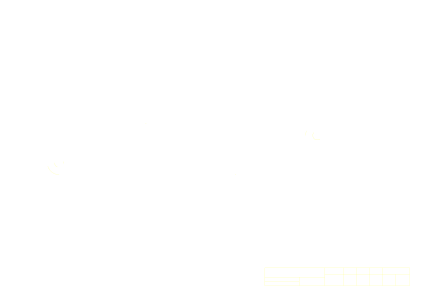

Assembly
현재 구성: ID 2–7 active / ID 1, 8 unused
관절을 클릭한 뒤 ← → 또는 A / D 로 선택 축을 움직입니다.
선택 관절ID 2 · waist yaw
상태zero / 0.0°
축 방향yaw
제한 범위-45° … +45°
CAD Reference
첨부된 2XL-430.dwg에서 변환한 2D 원본 도면

DWG → SVG / model space
이 DWG는 3D solid가 아니라 도면·치수 중심의 2D 엔티티로 읽혔습니다. 따라서 오른쪽은 실제 도면을 기준으로 확인하고, 왼쪽은 조립·동작 검증용 파라메트릭 트윈으로 분리했습니다.
0.0°
0.0°
2XL-430 body출력축 / 케이블선택 축